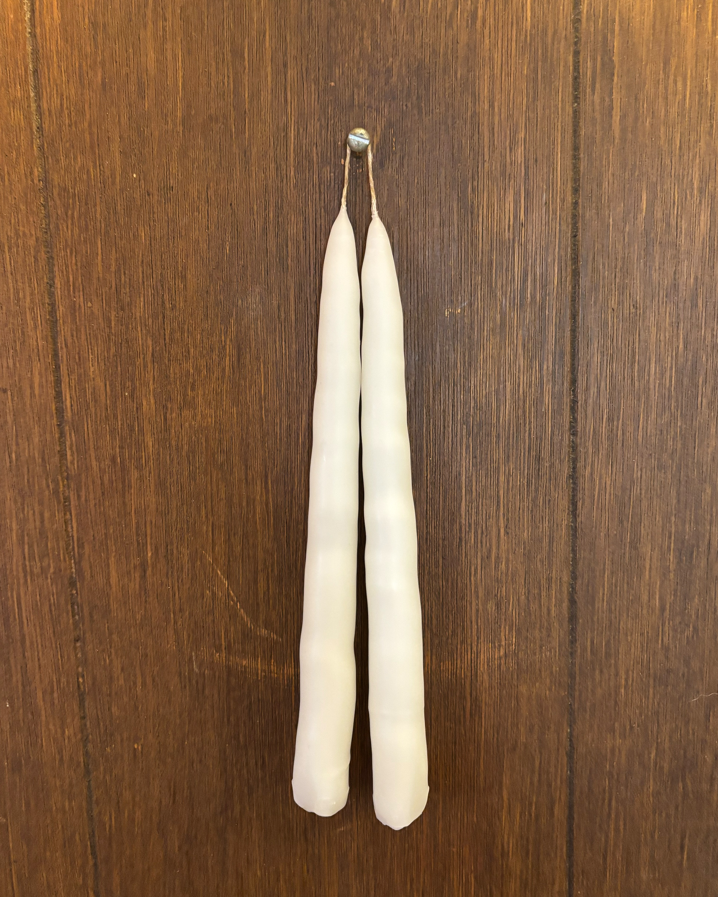
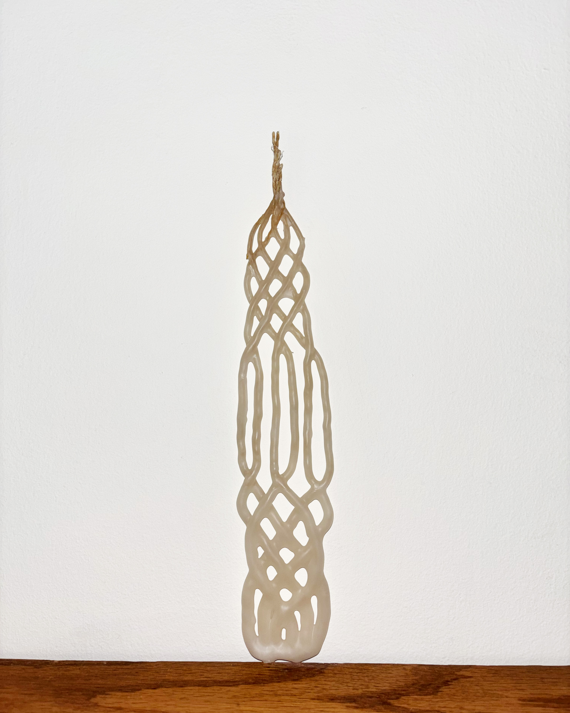
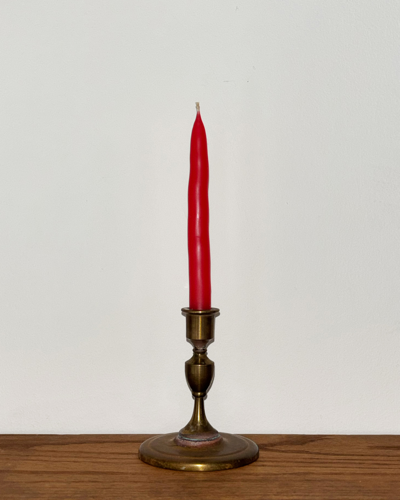
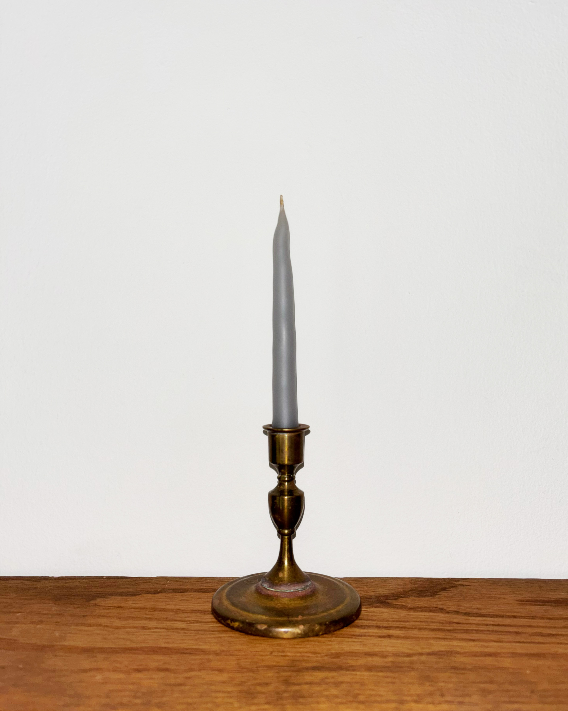

Holding Hands Candle

Hand sculpted taper candle made of beeswax from a local apiary and hemp wick. Two wicks are woven around the central candle. Base of the candle is made to fit a standard taper holder. The height of this candle is around 10".
If you choose to burn your candle, place it on a nonflammable surface or holder away from other objects and walls. Never leave a lit candle unattended.
Taper Candle


Hand dipped taper candle made of beeswax from a local apiary and hemp wick. Base of the candle is made to fit a standard taper holder. The height of this candle is around 10".
If you choose to burn your candle, place it on a nonflammable surface or holder away from other objects and walls. Never leave a lit candle unattended.
Mini Taper Candle


Hand dipped taper candle made of beeswax from a local apiary and hemp wick. Base of the candle is made to fit a mini taper holder. The height of this candle is around 10".
If you choose to burn your candle, place it on a nonflammable surface or holder away from other objects and walls. Never leave a lit candle unattended.
Desire Path Candle

Hand braided candle made of beeswax from a local apiary and hemp wick. The height of this candle is around 10". Please know this candle is made up of multiple wicks.
If you choose to burn your candle, place it on a nonflammable surface or holder away from other objects and walls. Never leave a lit candle unattended.
Twisted Heart Candle

Hand sculpted taper candle made of beeswax from a local apiary and hemp wick. Base of the candle is made to fit a mini taper holder. The height of this candle is around 8".
If you choose to burn your candle, place it on a nonflammable surface or holder away from other objects and walls. Never leave a lit candle unattended.
Shed Light Candle Pair


Hand dipped taper candle made of beeswax from a local apiary and hemp wick. Base of the candle is made to fit a mini taper holder. The height of this candle is around 6".
If you choose to burn your candle, place it on a nonflammable surface or holder away from other objects and walls. Never leave a lit candle unattended.
Red Chime Candle


Hand dipped taper candle made of beeswax from a local apiary and hemp wick. Base of the candle is made to fit a mini taper holder. The height of this candle is around 6".
If you choose to burn your candle, place it on a nonflammable surface or holder away from other objects and walls. Never leave a lit candle unattended.
Grey Chime Candle

Hand dipped taper candle made of beeswax from a local apiary and hemp wick. Base of the candle is made to fit a mini taper holder. The height of this candle is around 6".
If you choose to burn your candle, place it on a nonflammable surface or holder away from other objects and walls. Never leave a lit candle unattended.